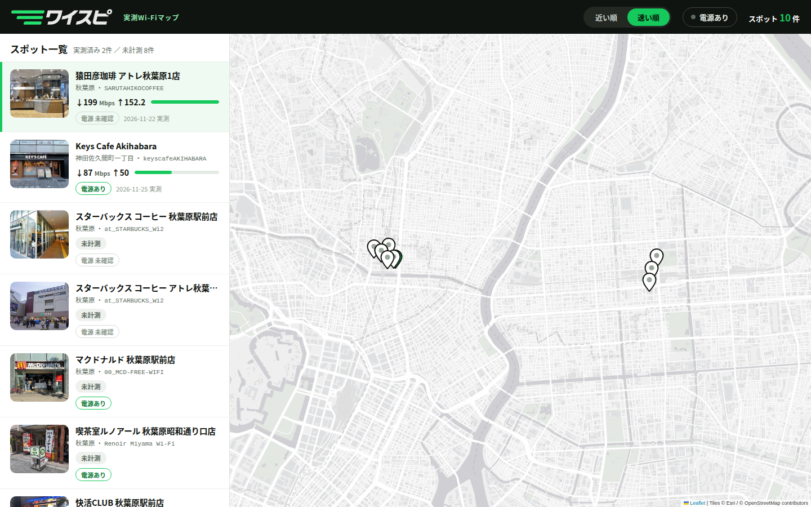
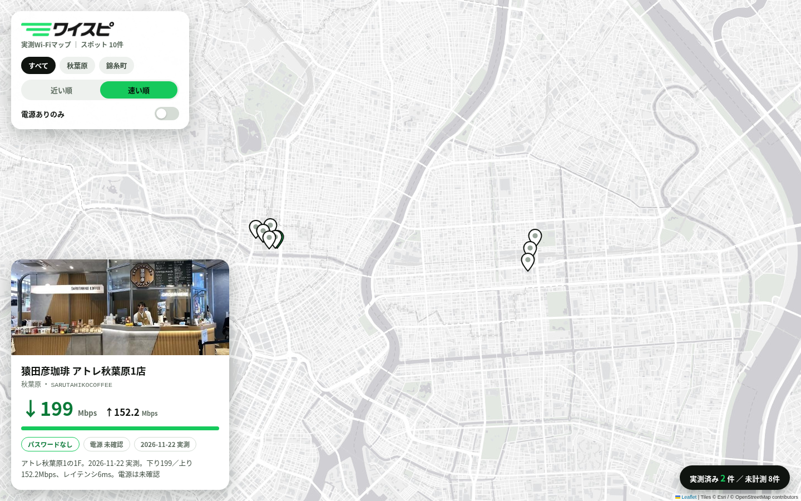
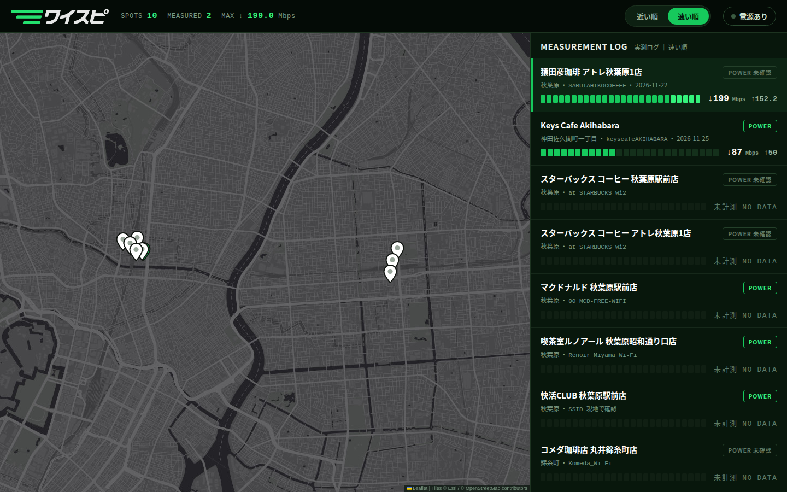

ワイスピ PC版リデザイン 5案
実測Wi-Fiマップ「ワイスピ」のPC版レイアウト案です。各案とも本番と同じ実データ（スポット10件・実測2件）で組んでいます。番号で選んでください。
※ スマホ版は現行のまま変更しません。本番ページにもまだ反映していません。選ばれた案だけを後で実装します。
1
サイドバー型
左にスポットリスト、右に大きな地図。王道のマップUIで迷わない構成

案1のモックを開く2
ダッシュボード型
上部の統計帯で全体像が一目で分かる。情報密度がいちばん高い構成
 案2のモックを開く
案2のモックを開く
3
フローティングパネル型
地図が主役。操作パネルと選択中スポットの詳細カードを浮かせた今風の形

案3のモックを開く4
エディトリアル型
写真と大きな速度数字で読ませる雑誌風。地図は上部の細い帯に
 案4のモックを開く
案4のモックを開く
5
計測コンソール型
黒×緑のダークテーマ。LEDメーター風の表示で「計測」感を強く出す

案5のモックを開く